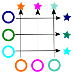
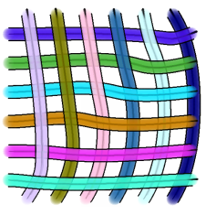
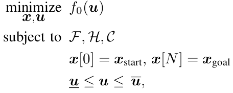
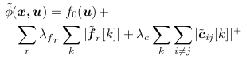
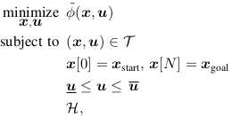
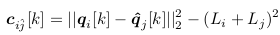
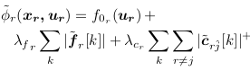
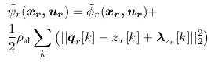
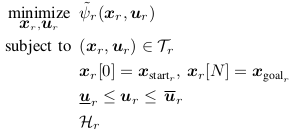

Created: 2022-03-11 fre 13:34


Problem
Solution

Complex dynamics (F) 💀
OR
Complex dynamics (F) 💀
OR
Both are Non-convex [Pfaffian constraints]
Complex dynamics (F) 💀
OR
Both are Non-convex [Pfaffian constraints]
1. Complex dynamics
Sequential Convex Programming
1. Complex dynamics
Sequential Convex Programming

1. Complex dynamics Sequential Convex Programming
| Original Problem | Approx. Problem |
| Before | After |
|  | |
| Solved once | Iteratively solved |
| Slow | Fast |
2. Collision Constraints
L2-norm between each robot xy
2. Collision Constraints
L2-norm between each robot xy Change qj is fixed (all other robots)

2. Collision Constraints
L2-norm between each robot xy Change qj is fixed (all other robots)
Cost Function
| Before | After |
|  | |
| All robots | Single Robot |
| Coupled | Parallel |
2. Collision Constraints
Missing Piece These Cij are pair wise and need to converge
2. Collision Constraints
Consensus Optimization (Proximal Method)

2. Collision Constraints
Consensus Optimization (Proximal Method)
| Before | After |
|  | |
| All robots | Single robot (parallel) |
| Iteratively | Iteratively |
| Optimize + Convexify | Optimize + Convexity + Share |
Problem with 5 Robots Solution at each iteration video
cd ../examples/
ls
cd ..
cp -a missions/* bin/
cd bin/
mpirun -np 6 --use-hwthread-cpus --oversubscribe ./distributed_scp square_sided_6 0.5pol.png
cd ..
Thank You! 🐂